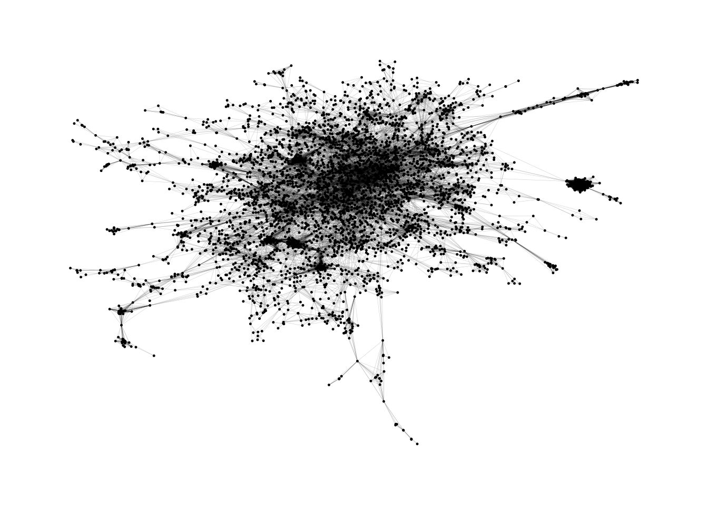
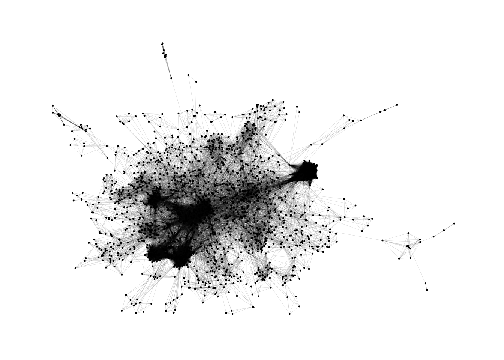
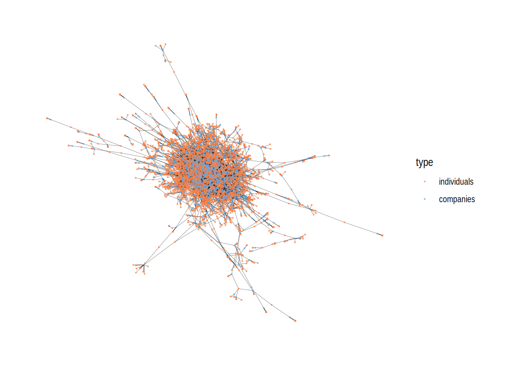

library(tidyverse)
library(igraph)
library(ggraph)
library(Matrix)Introduktion til netværksanalyse i R
I denne øvelses-session skal vi indlæse et netværksdatasæt og lave den første simple netværksgraf. Datasættet vi kigger på er kommer vi i øvrigt til at gå meget mere i dybden med se Session 2 (uge 7).
Først indlæser vi de pakker vi kommer til at bruge:
Indlæs og udvælg data
Dernæst indlæser vi og gemmer datasættet den17-no-nordic-letters.csv, som ligger mappen "/data" i R projketet. Det kan også downloades her: Download den17
Indlæs data med read_csv()
den <- read_csv("data/den17-no-nordic-letters.csv")I “Intro til R og Tidyverse” introducerede vi en række funktioner fra tidyverse’s dplyr pakke. Dem skal vi bruge nogle af her.
Først ser vi lige på hvad vores dataobjekt indeholder glimpse(). Det består af 56849 og 10 kolonner - eller variable:
den %>% glimpse()Rows: 56,849
Columns: 10
$ name <chr> "Lars Eivind Kreken", "Mikael Ernst Joergensen", "Thom…
$ affiliation <chr> "& co", "& co", "& co", "& co", "15. juni fonden (Best…
$ role <chr> "Member", "Executive", "Chairman", "Member", "Chairman…
$ gender <chr> "Men", "Men", "Men", "Men", "Men", "Men", "Women", "Wo…
$ tags <chr> "Corporation, Media, Marketing, Commercials, Communica…
$ sector <chr> "Corporations", "Corporations", "Corporations", "Corpo…
$ type <chr> "Virksomhed (CVR)", "Virksomhed (CVR)", "Virksomhed (C…
$ cvr_person <dbl> 4006470500, 4004059627, 4004304040, 4004062718, NA, 40…
$ cvr_affiliation <dbl> 21705535, 21705535, 21705535, 21705535, 15232102, 1523…
$ description <chr> "Automatisk CVR import at 2016-03-12 17:45:41: BESTYRE…Lad os tjekke hvad sector variablen indeholder med count() - og også med distinct(), da vores data indeholde flere rækker for hver organisation (affiliation, som variablen med organisationsnavne hedder), da der er tale om et positionsdatasæt individ-rolle-organisation:
- Der er 9524 positioner i affiliations/organisationer, der har koden corporations.
- Det svarer til 1454 unikke corporations.
den %>% count(sector, sort = TRUE)# A tibble: 13 × 2
sector n
<chr> <int>
1 NGO 17720
2 State 13764
3 Corporations 9524
4 Foundations 6993
5 VL_networks 3803
6 Events 2270
7 Parliament 1087
8 Commissions 814
9 Municipal 320
10 Organisation 227
11 Family 207
12 <NA> 83
13 Politics 37den %>% distinct(affiliation, sector) %>% count(sector, sort = TRUE)# A tibble: 13 × 2
sector n
<chr> <int>
1 NGO 1550
2 Corporations 1454
3 Foundations 1174
4 State 1085
5 VL_networks 114
6 Commissions 68
7 Family 51
8 Parliament 49
9 Organisation 23
10 Municipal 22
11 Events 17
12 <NA> 9
13 Politics 3Lad os bruge filter() til at lave et nyt dataobjekt, der kun indeholder de rækker, hvor sector er lig Corporations.
den_corp <- den %>%
filter(sector == "Corporations") den_corp %>% count(affiliation, sort = TRUE)# A tibble: 1,454 × 2
affiliation n
<chr> <int>
1 TRE-FOR (Repraesentantskab) 119
2 Kromann Reumert 55
3 Bech-Bruun 54
4 Gorrissen Federspiel 40
5 Plesner 40
6 EnergiMidt 31
7 Lett Law Firm 27
8 Koebenhavns Lufthavns Vaekstkomité (Medlemmer) 24
9 Syd Energi (SE) 24
10 TDC (note) 24
# ℹ 1,444 more rowsFra data til netværksobjekter
Netværksdata er ofte indsamlet i den form vi finder i den17 datasættet. Altså som en såkaldt edge-list, der i to kolonner repræsenterer forbindelser mellem ‘noget’. I dette personer i en kolonne og organisationer. Det kunne for så vidt også være individer i en kolonne og individer i den anden (fx. facebook venskaber). Når vi skal omforme vores data til et format der muliggør netværksanalyse og -visualisering bruger vi R-pakken igraph.
Her det er fordel lige at få styr på et par matrix regneregler og begreber:
Adjacency matricer
Et at netværk (i matematiksprog en graf - som ikke er at forveksle med en graf som vi normalt kender den som fx en linje i et koordinatsystem) består af relationer mellem et eller to sæt af elementer, fx. relationer mellem individer (venskaber) eller relationer mellem individer og organisationer (poster/medlemskaber). Elementerne kalder vi vertices (eller noder) og forbindelserne kalder vi edges.
Et sæt vertices
Hvis netværket består af ét sæt af elementer, fx. individer, kalder vi matrix repræsentationen for en adjacency matrice (adjacent betyder ‘tilstødende’, altså ‘forbundet’). En adjacency matrice \(A\) for et netværk med \(n\)elementer \(V = \begin{pmatrix} v_1 & v_2 & \dots & v_n\end{pmatrix}\) definerer vi således som en \(n \times n\) matrice \(A\) hvor:
\[ a_{ij} = \begin{cases} 1, & \text{hvis der er en forbindelse mellem vertex } i \text{ og vertex } j \\ 0, & \text{eller} \end{cases} \] dvs.
\[A = \begin{pmatrix} 0 & 1 & 1 & 0 \\ 1 & 0 & 1 & 1 \\ 1 & 1 & 0 & 1 \\ 0 & 1 & 1 & 0 \end{pmatrix} \]
To sæt vertices
Hvis netværket derimod består af to distinkte sæt vertices, fx. individer og organisationer, hvor der kun er forbindelser på tværs af de to sæt om ikke indenfor dem, kalder vi det et bipartite netværk, kalder vi matrix repræsentationen en biadjacency matrice (nogen gange også incidence matrice).
En biadjacency matrice for et bipartite netværk med to sæt vertices \(V = \{ v_1, v_2, \dots, v_n \}\text{ og }U = \{ u_1, u_2, \dots, u_n \}\) er således en \(n \times m\) matrice \(B\) hvor: \[ B_{ij} = \begin{cases} 1 & \text{hvis der er en edge/forbindelse mellem vertex } u_i \text{ i sættet } U \text{ og vertex } v_j \text{ i sættet } V, \\ 0 & \text{hvis der ikke er en edge/forbindelse mellem } u_i \text{ og vertex } v_j. \end{cases} \]
dvs.
\[ B = \begin{pmatrix} 1 & 1 & 0 \\ 0 & 1 & 0 \\ 0 & 0 & 1 \\ 1 & 0 & 1 \end{pmatrix} \]
graf projektion
Vores bipartite netværk har som bekendt to forskellige typer af vertices \(V(individer) = \{ v_1, v_2, \dots, v_n \}\text{ og }U(organisationer) = \{ u_1, u_2, \dots, u_n \}\). Individ1 er forbundet til Organisation1 og Organisation2, Individ2 er forbundet til Organisation2… osv. Med lidt “simpel” matrix regning kan vi hurtigt udregne to nye netværk, nemlig \(Individ \times Individ\) netværket (altså hvilke individer er forbundet ‘gennem’ en eller flere organisationer) og \(Organisation \times Organisation\) netværket (altså hvilke organisationer er forbundet fordi de deler individer):
individ x individ
Ved at gange hele matricen \(B\) med en transponeret version af \(B\), \(B^T\) får vi en \(n \times n\) matrice for \(V\) sættet, altså en \(individ \times individ\):
\[M_v = B \times B^T = \begin{pmatrix} \textcolor{red}{1} & \textcolor{red}{1} & \textcolor{red}{0} \\ \textcolor{blue}{0} & \textcolor{blue}{1} & \textcolor{blue}{0} \\ \textcolor{green}{0} & \textcolor{green}{0} & \textcolor{green}{1} \\ \textcolor{purple}{1} & \textcolor{purple}{0} & \textcolor{purple}{1} \end{pmatrix} \times \begin{pmatrix} \textcolor{red}{1} & \textcolor{blue}{0} & \textcolor{green}{0} & \textcolor{purple}{1} \\ \textcolor{red}{1} & \textcolor{blue}{1} & \textcolor{green}{0} & \textcolor{purple}{0} \\ \textcolor{red}{0} & \textcolor{blue}{0} & \textcolor{green}{1} & \textcolor{purple}{1} \end{pmatrix} \text{farverne repræsenterer individrækkerne}\] \[=\begin{pmatrix} \textcolor{red}{1} \times \textcolor{red}{1} + \textcolor{red}{1} \times \textcolor{red}{0} + \textcolor{red}{0} \times \textcolor{red}{0} & \textcolor{red}{1} \times \textcolor{blue}{0} + \textcolor{red}{1} \times \textcolor{blue}{1} + \textcolor{red}{0} \times \textcolor{blue}{0} & \textcolor{red}{1} \times \textcolor{green}{0} + \textcolor{red}{1} \times \textcolor{green}{0} + \textcolor{red}{0} \times \textcolor{green}{1} & \textcolor{red}{1} \times \textcolor{purple}{1} + \textcolor{red}{1} \times \textcolor{purple}{0} + \textcolor{red}{0} \times \textcolor{purple}{1} \\ \textcolor{blue}{0} \times \textcolor{red}{1} + \textcolor{blue}{1} \times \textcolor{red}{0} + \textcolor{blue}{0} \times \textcolor{red}{0} & \textcolor{blue}{0} \times \textcolor{blue}{0} + \textcolor{blue}{1} \times \textcolor{blue}{1} + \textcolor{blue}{0} \times \textcolor{blue}{0} & \textcolor{blue}{0} \times \textcolor{green}{0} + \textcolor{blue}{1} \times \textcolor{green}{0} + \textcolor{blue}{0} \times \textcolor{green}{1} & \textcolor{blue}{0} \times \textcolor{purple}{1} + \textcolor{blue}{1} \times \textcolor{purple}{0} + \textcolor{blue}{0} \times \textcolor{purple}{1} \\ \textcolor{green}{0} \times \textcolor{red}{1} + \textcolor{green}{0} \times \textcolor{red}{0} + \textcolor{green}{1} \times \textcolor{red}{0} & \textcolor{green}{0} \times \textcolor{blue}{0} + \textcolor{green}{0} \times \textcolor{blue}{1} + \textcolor{green}{1} \times \textcolor{blue}{0} & \textcolor{green}{0} \times \textcolor{green}{0} + \textcolor{green}{0} \times \textcolor{green}{0} + \textcolor{green}{1} \times \textcolor{green}{1} & \textcolor{green}{0} \times \textcolor{purple}{1} + \textcolor{green}{0} \times \textcolor{purple}{0} + \textcolor{green}{1} \times \textcolor{purple}{1} \\ \textcolor{purple}{1} \times \textcolor{red}{1} + \textcolor{purple}{0} \times \textcolor{red}{0} + \textcolor{purple}{1} \times \textcolor{red}{0} & \textcolor{purple}{1} \times \textcolor{blue}{0} + \textcolor{purple}{0} \times \textcolor{blue}{1} + \textcolor{purple}{1} \times \textcolor{blue}{0} & \textcolor{purple}{1} \times \textcolor{green}{0} + \textcolor{purple}{0} \times \textcolor{green}{0} + \textcolor{purple}{1} \times \textcolor{green}{1} & \textcolor{purple}{1} \times \textcolor{purple}{1} + \textcolor{purple}{0} \times \textcolor{purple}{0} + \textcolor{purple}{1} \times \textcolor{purple}{1} \end{pmatrix} \]
\[= \begin{pmatrix} \textcolor{red}{2} & 1 & 0 & 1 \\ 1 & \textcolor{blue}{1} & 0 & 0 \\ 0 & 0 & \textcolor{green}{1} & 1 \\ 1 & 0 & 1 & \textcolor{purple}{2} \end{pmatrix} \]
Matrix \(M_v\) fortæller os i diagonalen, hvor mange gange hvert individ ‘møder sig selv’ (læs: hvor mange organisationer de er medlem af), uden for diagonalen fortæller det os at i1 (individ1) har fælles organisationer med både både i2 og i4 mens i2 kun deler organisation med én, nemlig i1. I4 har også to fælles organisationer, nemlig med i1 og i3, mens i3 også kun har én fælles tilknytning, nemlig med i4.
organisation x organisation
Vi kan også gøre det omvendt: Ved at en transponeret version af \(B\), \(B^T\), med \(B\) får vi en \(m \times m\) matrice for \(U\) sættet, altså en \(organisation \times organisation\):
\[M_u = B^T \times B= \begin{pmatrix} \textcolor{red}{1} & \textcolor{red}{0} & \textcolor{red}{0} & \textcolor{red}{1} \\ \textcolor{blue}{1} & \textcolor{blue}{1} & \textcolor{blue}{0} & \textcolor{blue}{0} \\ \textcolor{green}{0} & \textcolor{green}{0} & \textcolor{green}{1} & \textcolor{green}{1} \end{pmatrix} \times \begin{pmatrix} \textcolor{red}{1} & \textcolor{blue}{1} & \textcolor{green}{0} \\ \textcolor{red}{0} & \textcolor{blue}{1} & \textcolor{green}{0} \\ \textcolor{red}{0} & \textcolor{blue}{0} & \textcolor{green}{1} \\ \textcolor{red}{1} & \textcolor{blue}{0} & \textcolor{green}{1} \end{pmatrix} \text{farverne repræsenterer organisationskolonnerne}\]
\[=\begin{pmatrix} \textcolor{red}{1} \times \textcolor{red}{1} + \textcolor{red}{0} \times \textcolor{red}{0} + \textcolor{red}{0} \times \textcolor{red}{0} + \textcolor{red}{1} \times \textcolor{red}{1} & \textcolor{red}{1} \times \textcolor{blue}{1} + \textcolor{red}{0} \times \textcolor{blue}{1} + \textcolor{red}{0} \times \textcolor{blue}{0} + \textcolor{red}{1} \times \textcolor{blue}{0}& \textcolor{red}{1} \times \textcolor{green}{0} + \textcolor{red}{0} \times \textcolor{green}{0} + \textcolor{red}{0} \times \textcolor{green}{1} + \textcolor{red}{1} \times \textcolor{green}{1} \\ \textcolor{blue}{1} \times \textcolor{red}{1} + \textcolor{blue}{1} \times \textcolor{red}{0} + \textcolor{blue}{0} \times \textcolor{red}{0} + \textcolor{blue}{0} \times \textcolor{red}{0} & \textcolor{blue}{1} \times \textcolor{blue}{1} + \textcolor{blue}{1} \times \textcolor{blue}{1} + \textcolor{blue}{0} \times \textcolor{blue}{0} + \textcolor{blue}{0} \times \textcolor{blue}{0} & \textcolor{blue}{1} \times \textcolor{green}{0} + \textcolor{blue}{1} \times \textcolor{green}{0} + \textcolor{blue}{0} \times \textcolor{green}{1} + \textcolor{blue}{0} \times \textcolor{green}{1} \\ \textcolor{green}{0} \times \textcolor{red}{1} + \textcolor{green}{0} \times \textcolor{red}{1} + \textcolor{green}{1} \times \textcolor{red}{0} + \textcolor{green}{1} \times \textcolor{red}{1} & \textcolor{green}{0} \times \textcolor{blue}{1} + \textcolor{green}{0} \times \textcolor{blue}{1} + \textcolor{green}{1} \times \textcolor{blue}{0} + \textcolor{green}{1} \times \textcolor{blue}{0} & \textcolor{green}{0} \times \textcolor{green}{0} + \textcolor{green}{0} \times \textcolor{green}{0} + \textcolor{green}{1} \times \textcolor{green}{1} + \textcolor{green}{1} \times \textcolor{green}{1} \end{pmatrix} \]
\[= \begin{pmatrix} \textcolor{red}{2} & 1 & 1 \\ 1 & \textcolor{blue}{2} & 0 \\ 1 & 0 & \textcolor{green}{2} \end{pmatrix} \]
Matrix \(M_u\) fortæller os i diagonalen, hvor mange gange hver medlemmer hver organisation har. Uden for diagonalen fortæller det os nu at o1 (organisation1) deler et medlem med både o2 og o3 mens o2 kun deler medlem med én organisation, nemlig o1. o3 har også et individ med en anden organisation, nemlig med o1.
Note
Ovenstående var eksempler på hvordan vi ved hjælp af matrix regning kommer fra en biadjaceny matrice, \(B\) med fx individer i rækker og organisationer i kolonner, til to forskellige adjacency matricer \(M_{individ \times individ}\) og \(M_{organisation \times organisation}\).
- \(M_{individ \times individ} = B \times B^T\)
- \(M_{organisation \times organisation} = B^T \times B\)
I R kode er det meget nemmere end det ser ud…
x <- data.frame(i = c("ind1", "ind2", "ind3", "ind4"), org1 = c(1,0,0,1), org2= c(1,1,0,0), org3 = c(0,0,1,1), row.names = "i") %>% as.matrix()
x org1 org2 org3
ind1 1 1 0
ind2 0 1 0
ind3 0 0 1
ind4 1 0 1t(x) ind1 ind2 ind3 ind4
org1 1 0 0 1
org2 1 1 0 0
org3 0 0 1 1x %*% t(x) ind1 ind2 ind3 ind4
ind1 2 1 0 1
ind2 1 1 0 0
ind3 0 0 1 1
ind4 1 0 1 2t(x) %*% x org1 org2 org3
org1 2 1 1
org2 1 2 0
org3 1 0 2Praktisk eksempel med den17
lad os bruge det dataobjekt vi allerede har defineret, den_corp, som indeholder alle rækker fra den17 som har sector == "Corporations".
vi kan lige se, hvordan kolonnerne name og affiliation ser ud:
den_corp %>% select(name, affiliation) # A tibble: 9,524 × 2
name affiliation
<chr> <chr>
1 Lars Eivind Kreken & co
2 Mikael Ernst Joergensen & co
3 Thomas Hoegeboel & co
4 Thomas Hoffmann & co
5 Niels Thorborg 3C Groups
6 Soeren Melanchton Pedersen 3C Groups
7 Nicoline E. Hyldahl 3C Groups
8 Maurizio Botta 3M
9 Nicolas Nees Henriksson 3M
10 Niels Roeddik 3M
# ℹ 9,514 more rowsDet vil vi gerne lave til en biadjacency matrice med individer i rækker og affiliations i kolonnerne. Fordi det bliver en kæmpe tabel med 7641 rækker og 1454 kolonner, bruger vi funktionen xtabs() som gemmer data i hukommelse på en smart måde (hvis vi sætter option spare = TRUE), så vi slipper på at bruge computerhukommelse på alle ‘nullerne’ (det skal I ikke bekymre jer om)
den_corp_bi <- den_corp %>% xtabs(formula = ~name + affiliation, sparse = TRUE)Som I kan se har den_corp_bi nu 7641 rækker og 1454 kolonner
den_corp_bi %>% dim()[1] 7641 1454og matricen er fyldt med en masse . fordi den er sparse. De stedet i tabellen hvor der faktisk er en forbindelse mellem \(Individ_{i}\) og \(Organisation_{j}\) står der tilgengæld \(1\).
den_corp_bi[1:10, 750:770]10 x 21 sparse Matrix of class "dgCMatrix" [[ suppressing 21 column names 'KHR arkitekter', 'Kilroy International', 'Kim Johansen' ... ]] affiliation
name
Aage Almtoft . . . . . . . . . . . . . . . . . . . . .
Aage Juhl Joergensen . . . . . . . . . . . . . . . . . . . . .
Aage Kjaer Soerensen . . . . . . . . . . . . . . . . . . . . .
Aage Laurids Andreasen . . . . . . . . . . . . . . . . . . . . .
AAke Fredriksson . . . . . . . . . . . . 1 . . . . . . . .
AAke Hantoft . . . . . . . . . . . . . . . . . . . . .
AAke Marcus Wärring . . . . . . . . . . . . . . . . . . . . .
AAke Per-Urban Bäckström . . . . . . . . . . . . . . . . . . . . .
Aalipaaraq Kreutzmann . . . . . . . . . . . . . . . . . . . . .
Aaron Todd Church . . . . . . . . . . . . . . . . . . . . .Lad os implementere den besværlige matrixregning, nu i effektiv R-kode og dermed lave to adjacency matricer:
den_corp_ind <- den_corp_bi %*% t(den_corp_bi)
den_corp_org <- t(den_corp_bi) %*% den_corp_biDet giver os to matricer med dimensionerne
dim(den_corp_ind)[1] 7641 7641dvs individ x individ,
og
dim(den_corp_org)[1] 1454 1454dvs. organisation x organisation.
Netværksobjekter fra matricer (igraph())
Nu skal vi til at bruge igraph()-pakken, som har en masse funktioner til at lave og analysere netværksdata:
(Monopartite) netværk
graph_from_adjacency_matrix()tager, som funktionens navn indikerer en adjacency matrice, som dem vi lige har lavet, og giver et netværksobjekt som output. Funktionen har tre vigtige options:mode =,weighted =ogdiag =,- mode kan være enten
mode = "directed"ellermode = "undirected", alt efter om netværket er retningsbestemt eller ej: er A - B og B - A det samme eller to forskellige ting. - weigthed kan være enten
weighted = TRUEellerweighted = FALSE, alt efter om det har nogen betydning, hvor mange gange (eller hvor godt) A og B kender hinanden. - diag kan være enten
diagonal = TRUEellerdiagonal = FALSE, alt efter om vi er interesseret i diagonalen, dvs. A’s forbindelse til sig selv.
- mode kan være enten
I dette tilfælde, hvor vores matrice er en projektion af en medlemskabsliste, har netværket ingen retning. A kender B på samme måde som B kender A, når de sidder sammen i en bestyrelse. Matricen er vægtet, fordi A og B kan kende hinanden flere steder. Og diagonalen, den er vi ikke interesseret i.
g_ind <- den_corp_ind %>% graph_from_adjacency_matrix(mode = "undirected", weighted = TRUE, diag = FALSE)
g_indIGRAPH 145365d UNW- 7641 42967 --
+ attr: name (v/c), weight (e/n)
+ edges from 145365d (vertex names):
[1] Aage Almtoft --Allan Buch
[2] Aage Almtoft --Bettina Joergensen
[3] Aage Almtoft --Bo Skovby Rosendahl
[4] Aage Almtoft --Bo Smith 4493
[5] Aage Almtoft --Claus Nielsen 50129
[6] Aage Almtoft --Jan Melgaard
[7] Aage Almtoft --Martin Noerholm Baltser
[8] Aage Almtoft --Michael Frandsen
+ ... omitted several edgesEt grafobjekt fra Igraph er et særligt dataobjekt, som indeholder to forskellige elementer af data, nemlig vertices og edges. der er 7641 vertices i vores objekt og 42967 edges. Hver af disse elementer kan have forskellige attributes (se + attr:) Som I kan se har vi to attributes name (v/c) og weight (e/n). (v/c) ved name betyder at det er en attribute til vores vertices og at det er en character vektor (det er en vektor med navne). (e/n) ved weight betyder at det er en attribute til vores edges og at det er en numerisk vektor (en vektor med tal, der indikerer styrken af forbindelsen)  Hvis vi gerne vil tilgå vertex attrubutes i vores grafobjekt skal vi bruge funktionen
Hvis vi gerne vil tilgå vertex attrubutes i vores grafobjekt skal vi bruge funktionen V() fra igraph efterfulgt af $ og navnet på den specifikke attribute her altså $name. Lad os se de første 20 navne.
V(g_ind)$name %>% head(20) [1] "Aage Almtoft"
[2] "Aage Juhl Joergensen"
[3] "Aage Kjaer Soerensen"
[4] "Aage Laurids Andreasen"
[5] "AAke Fredriksson"
[6] "AAke Hantoft"
[7] "AAke Marcus Wärring"
[8] "AAke Per-Urban Bäckström"
[9] "Aalipaaraq Kreutzmann"
[10] "Aaron Todd Church"
[11] "AAse Aulie Michelet"
[12] "AAse Kogsboell"
[13] "Abdelmottaleb Doulan"
[14] "Abdulkareem Hamad A Alayuni"
[15] "Adam Christian Harhoff"
[16] "Adam Christoffer Knuth"
[17] "Adam Hugh Warby"
[18] "Adam Price"
[19] "Adam Troels Bjerg"
[20] "Adamangelo Cavalié Engelhardt 196867"Hvis vi gerne vil tilgå edge attributes i vores grafobjekt skal vi bruge funktionen E() fra igraph efterfulgt af $ og navnet på den specifikke attribute her altså $weight. Lad os se de første 20 vægte og derefter et table() over fordelingen.
E(g_ind)$weight %>% head(20) [1] 1 1 1 1 1 1 1 1 1 1 1 1 1 1 1 1 1 1 1 1E(g_ind)$weight %>% table().
1 2 3 4 5 9
41325 1441 158 30 12 1 Der er altså mange, der kender hinanden fra en organisation, nogle kender hinanden fra to og ganske ganske få fra tre eller flere.
vi kan også lave et graf-objekt for \(organisation \times organisation\)-matricen:
g_org <- den_corp_org %>% graph_from_adjacency_matrix(mode = "undirected", weighted = TRUE, diag = FALSE)lad os igen lige se vertex navne og edge vægte:
V(g_org)$name %>% head(20) [1] "& co"
[2] "3C Groups"
[3] "3M"
[4] "3xN"
[5] "5E Byg (Bestyrelse)"
[6] "7N"
[7] "A-pressen"
[8] "A. Enggaard Holding"
[9] "A.P. Moeller - Maersk"
[10] "A.R. HOLDING AF 1999 A/S"
[11] "A/S DANSK ERHVERVSINVESTERING"
[12] "A/S POLITIKEN HOLDING"
[13] "A/S Silvagra"
[14] "A2SEA A/S"
[15] "AAGE OG JOHANNE LOUIS-HANSENS FOND"
[16] "Aalborg Engineering (bestyrelse)"
[17] "Aalborg Forsyning"
[18] "Aalborg Portland"
[19] "Aalborg Stiftstidende"
[20] "Aalborg Zoologiske Have (Bestyrelse)"E(g_org)$weight %>% head(20) [1] 1 1 1 1 1 1 1 1 1 1 4 1 2 2 1 1 1 1 1 1E(g_org)$weight %>% table().
1 2 3 4 5 6 7 8 9 10 11 13 15 17
2247 229 98 35 24 14 9 4 5 3 1 2 1 1 Hovedparten forbindelserne mellem organisationer skyldes altså ét overlappende medlem, nogle skyldes to og ganske få skyldes mere end to overlappende medlemmer (en enkelt forbindelse skyldes hele 17 fælles medlemmer)
(Bipartite) netværk
Endelig kan vi faktisk også lave et graf-objekt ud fra den oprindelige \(individ \times organisation\) biadjacency matrice
til det bruges funktionen:
graph_from_biadjacency_matrix()
g_bi <- den_corp_bi %>% graph_from_biadjacency_matrix()Netværksvisualisering
Lad os lige kort se på et par visualiseringer. Til det formål bruger vi ggraph()-pakken. Den vender vi tilbage til i løbet af kurset, så det udfoldes ikke yderligere her
\(individ \times individ\) netværket
g_ind_l <- largest_component(g_ind)
ggraph(g_ind_l, layout = "fr") +
geom_edge_link0(edge_alpha = 0.2, edge_width = 0.1) +
geom_node_point(size = 0.2) +
theme_graph() 
\(organisation \times organisation\) netværket
g_org_l <- largest_component(g_org)
ggraph(g_org_l, layout = "fr") +
geom_edge_link0(edge_alpha = 0.6, edge_width = 0.1) +
geom_node_point(size = 0.1) +
theme_graph() 
\(individ \times organisation\)-netværket
g_bi_l <- largest_component(g_bi)
ggraph(g_bi_l, layout = "fr") +
geom_edge_link0(edge_alpha = 0.8, edge_width = 0.1, color = "black") +
geom_node_point(aes(color = type), size = 0.2, alpha = 0.6) +
scale_color_manual(values=c("sienna1", "steelblue2"), labels=c("individuals", "companies")) +
theme_graph() 